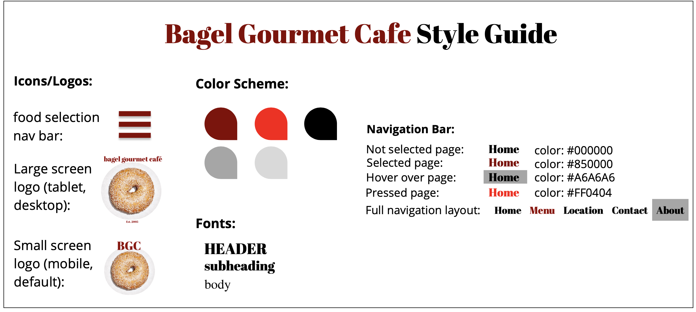

In this project, I redesigned a local bagel shop's website to increase elements of usability, accesibility, and equitability. Here is a link to Bagel Gourmet Cafe's (BGC) original website: BGC's site. I focused specifically on redesigning their Menu page:
In order to construct my design improvements, I first analyzed their existing site on factors of usability, learnability, accessibility, and memorability. Here are some points of improvement I noted:
BGC's current site could use some major redesign to improve aspects of accesibility. The simple addition of alt tags, larger font size, and greater contrasting colors will make the site usable by a broader range of people.
From my findings, I created a low-fidelty mockup for 3 different interfaces: mobile, tablet, and desktop.
I then created higher fidelity mockups, with more speicifcation annotations regarding software engineering elements and use.
Based on my functionality and design choices, I was then able to create a style guide:
Lastly, I actually created a redesigned webpage from my prototypes and style guide, using html and css.
Here's a link to the page: BGC's redesigned menu page
I've included some photos of the webpage from a mobile and desktop view: